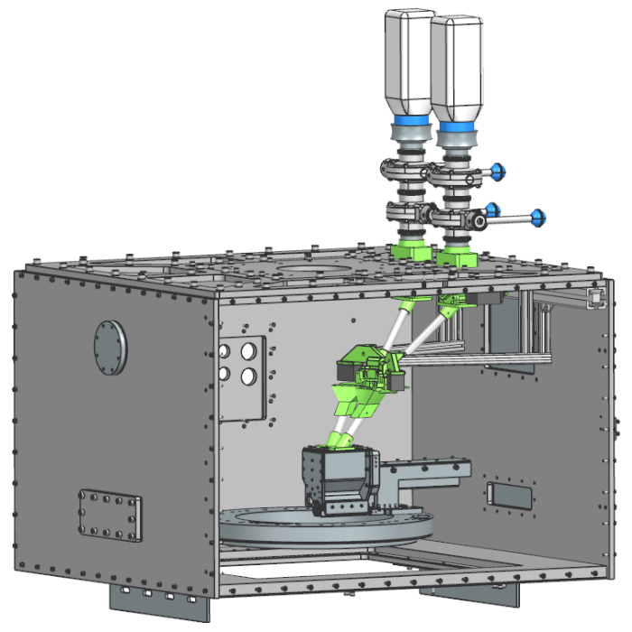
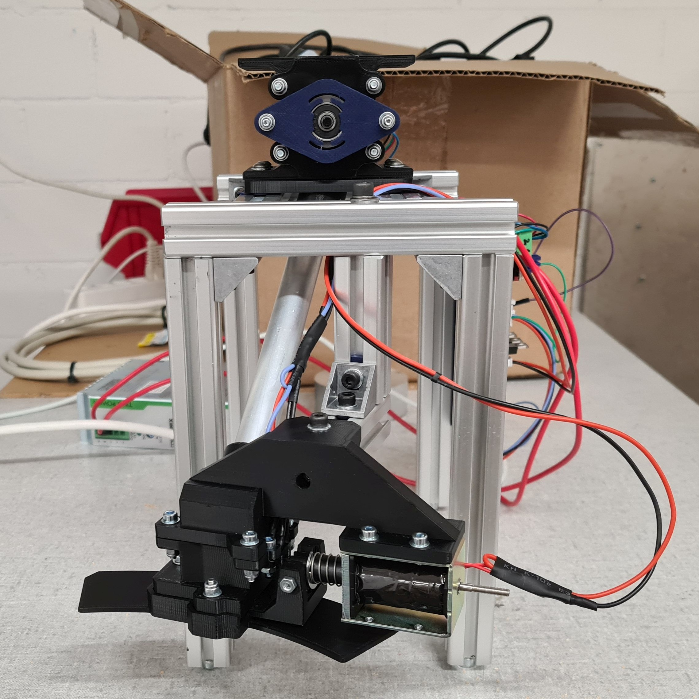
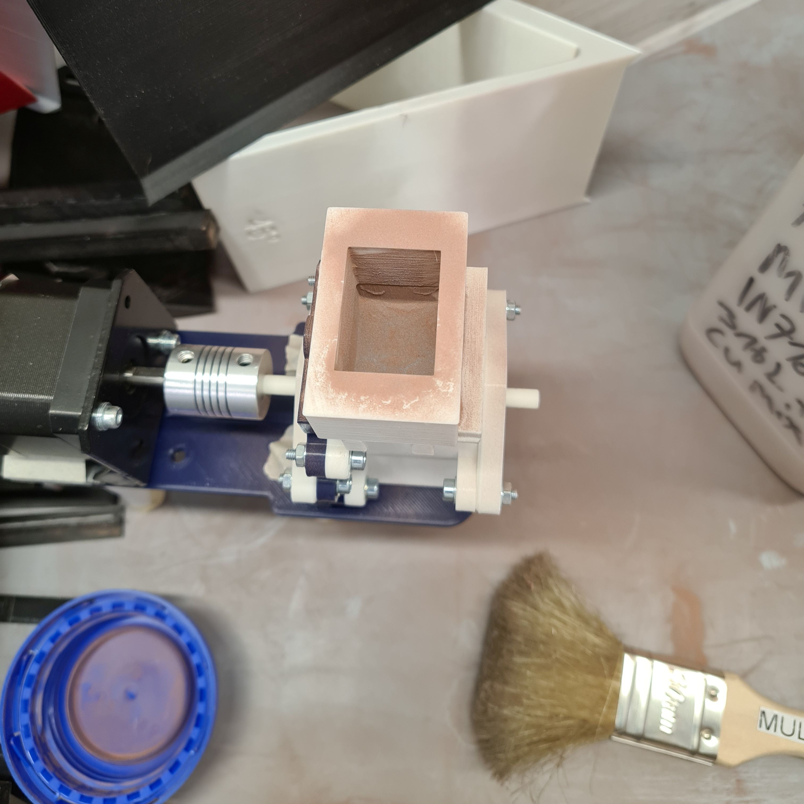
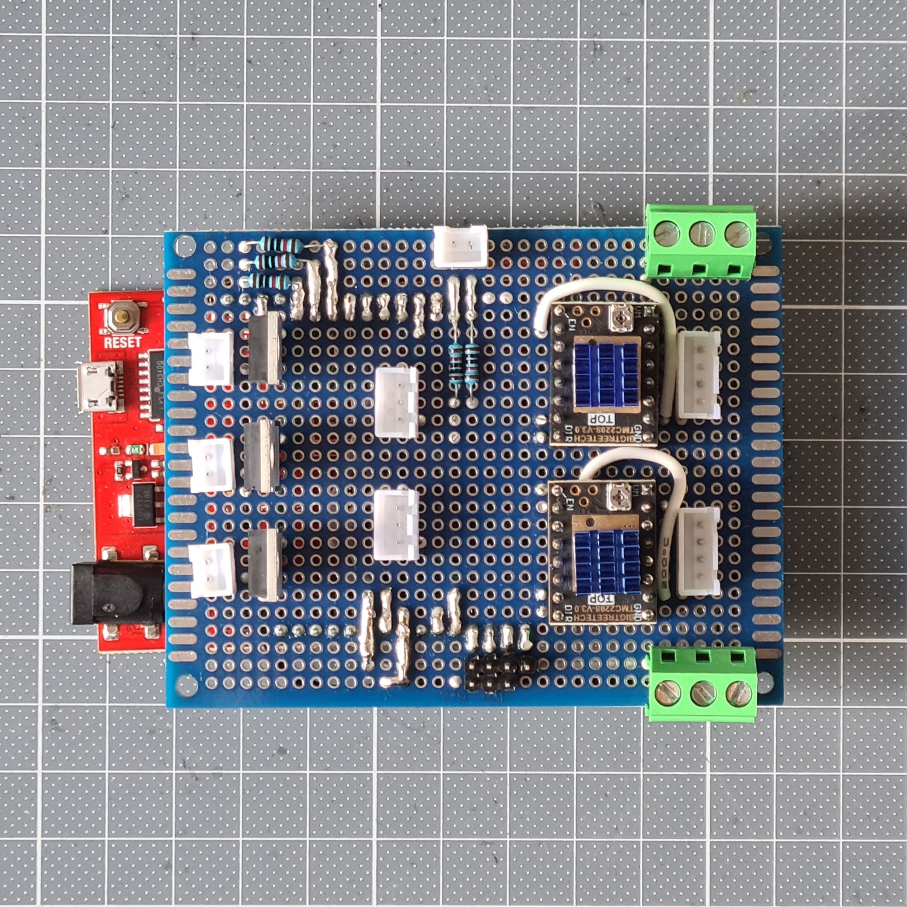

Bachelor Thesis
2024
For my bachelor's thesis, "Multi-Material Powder Refill Station for Novel Laser Powder Bed Fusion Machine," I developed a powder refill system for a novel continuous laser powder bed fusion machine, intended to keep it supplied with powder during long prints without stopping. My work covered the full mechanical and electical design, from custom feeders and dispensers to their mounts and interfaces, including CAD models, technical drawings, and manufacturing. I built and tested the feeders and dispensers as standalone units, validating dosing accuracy, flow reliability, and contamination prevention. Physical integration into the machine was left for the next phase of the project.




Project and IP owned by the Advanced Manufacturing Laboratory, ETH Zurich.